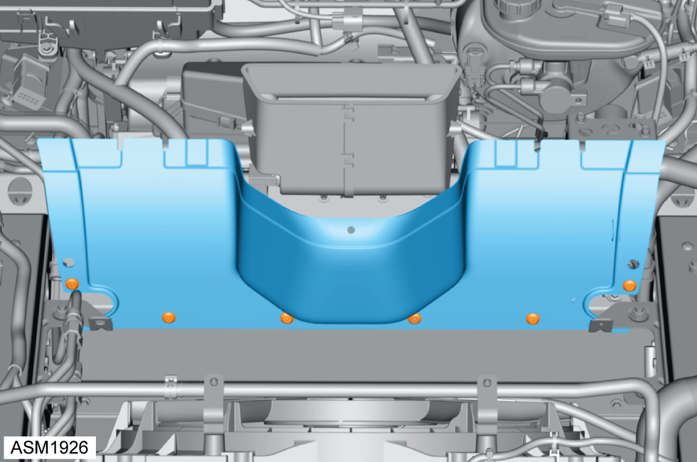

Hose Assembly - Return - Rear - 4 Cylinder
Print
Operation Code: 32.03.09-02
Removal
- Remove front undertray. Refer to procedure.
- Remove banjo bolt securing return hose to steering rack. Torque 32 Nm.
 Oil will discharge from hose assembly when removing banjo bolt. Use a container to collect oil.
Oil will discharge from hose assembly when removing banjo bolt. Use a container to collect oil.
Always record quantity and fitted position of washers.
- Remove radiator duct outlet left side. Refer to procedure.
- Remove radiator duct outlet right side.
NOTE: Procedure is the same as left side component.
- Remove scrivets (x3) securing HVAC air inlet to vehicle.
- Remove M5x12 screws and washers (x2) securing HVAC air inlet to filter lid.
- Remove HVAC air inlet.

- Remove scrivets (x6) securing centre radiator duct to front subframe.
- Remove centre radiator duct.
- Release clips (x2) securing return hose to reservoir/pump hose and harness.
- Remove M6x16 bolt securing return hose to crossmember. Torque 10 Nm.
- Disconnect return hose from reservoir.
- Remove return hose.
Installation
- Installation is the reverse of removal procedure except for the following:
- Renew banjo bolt sealing washers.
- Fill power steering system. Refer to technical data.
- Bleed power steering system. Refer to procedure.